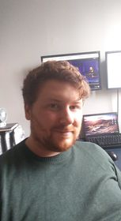

Jake Steven Zimmermann Simmons | University of Toronto | jake.zimmermann@mail.utoronto.ca
 I am Jake Steven Zimmermann Simmons. I am a PhD student in mathematics at the University of Toronto. Currently, I am a student under Dr.Joe Repka studying the representation theory of lie algebras (although I ususally just study the lie algebras themselves). I am in my forth year. Here is my CV.
I contribute a great deal to the culture of the math departement here at the University of Toronto. I am on the social committee of the MGSA. I also also am a go to TA with regard to invalulment in TA panles and TA support. I am very experienced with regards to TA observations, and I am happy to lend my expertiese.
When I am not doing math, I am cooking, playing basketball, socializing, making music, or learning about history equity, tranportation, and sociology from some podcast. I try my best to be as well rounded as I can in my interaction with the world.